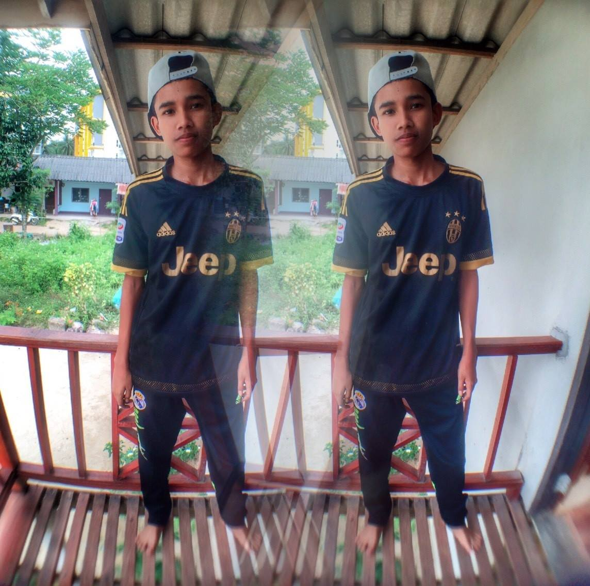

หน้าหลัก |
หน้าที่ 1 |
ตาราง |
แกลอลี่ภาพ |
ประวัติตัวเอง
หน้าหลัก |
หน้าที่ 1 |
ตาราง |
แกลอลี่ภาพ |
ประวัติตัวเอง
ผมชื่อ นายวราวุฒิ สุทธิการ ชื่อเล่น บี้ เกิดวันที่ 1 กรกฎาคม พ.ศ.2542
ประวัติการศึกษา ในช่วงอนุบาลถึง ประถมศึกษาปีที่ 6 เรียนในโรงเรียนบ้านคลองแห้ง ในช่วงมัธยมต้นเรียน โรงเรียนอัรรอยยานพิทยานุสรณ์ ช่วงมัธยมปลาย เรียนในโรงเรียนหนองทะเลวิยา แต่เรียนไม่จบออกมาต่อ ก.ศ.น.ตำบลอ่าวนาง แล้วจึงมาต่อที่วิทยาลัยชุมชนพังงา
ประวัติการทำงาน พนักงานเสิร์ฟในร้านเบอร์เกอร์
